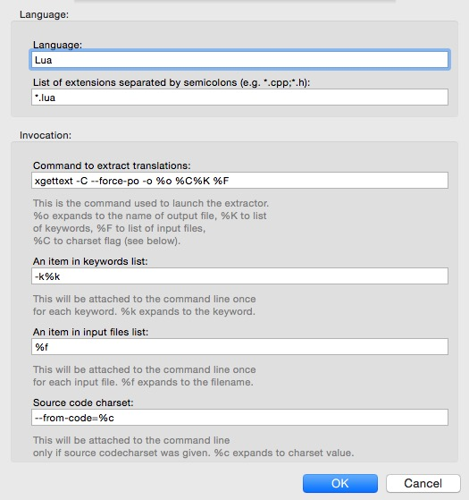
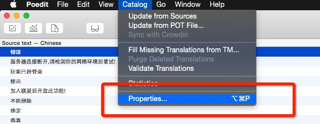
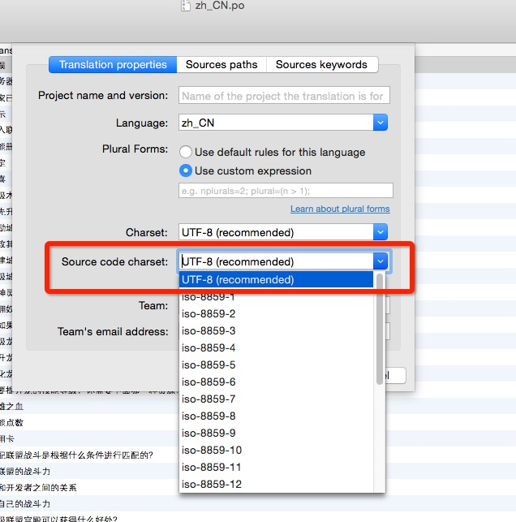
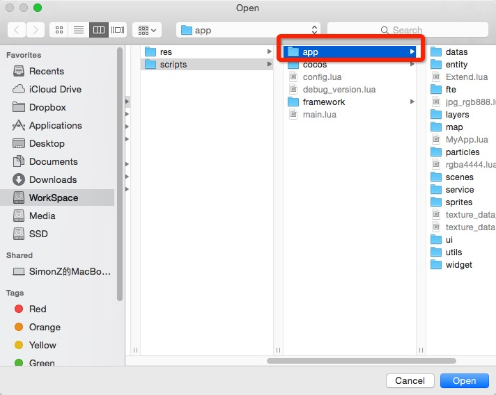

TexturePacker及其命令行工具poedit_osx.zip 和 poxls-1.1.0.tar.gzRELEASE_GIT_AUTO_UPDATE 指向自动更新仓库的本地绝对路径(仓库地址:git@github.com:ModunZhang/kod_update_server.git)tools/scripts下的所有脚本均有执行权限(执行脚本14安装)文件名加粗的脚本不关心,未加粗的才是常用脚本
buildGame.sh 执行lua和资源的导出 参数:1.平台 2.是否加密lua 3.是否加密资源(执行选择相应参数即可)
buildLuaConfig.sh 把excel配置表导出为lua文件
buildRes.sh 导出项目的资源 参数:1.平台 2.是否加密
buildScripts.sh 导出项目的lua文件 参数:1.平台 2.是否加密
buildUpdate.sh 发布自动更新脚本,执行选择相应参数即可
build_format_map.py 构建图片信息的python实现
cleanGame.sh 清除生成项目的中间文件和update目录
cleanMacPlayer.sh 清除保存在player中的userdefault中的信息,不会重置openudid
cleanTempFile.sh 清除生成项目的中间文件,但是不会清除update目录
exportPO2Xlsx.sh 将项目的本地化po文件导出为excel文件 参数:1.将要导出的excel文件的路径(xlsx后缀名)
exportXlsx2po.sh 将脚本10导出的excel导回项目中 参数:1.将要导入的excel文件路径(xlsx后缀名)
export_plist_texture_data.sh 将合成的大图信息导出到项目中(执行选择相应参数即可)
functions.sh
为其他脚本提供基础函数的脚本，如果要改变加密资源和lua的XXTEA信息就修改这个文件中的值
install.sh 为所有的脚本添加执行权限
plist_texture_data_to_lua.py 脚本12的python实现
syncUpdateDataToGit.sh
将生成的update目录上传到相应的git仓库,这个脚本不会自动部署服务器，需要手动ssh到服务器pull版本号使用这个脚本前必须确认全局shell变量RELEASE_GIT_AUTO_UPDATE
buildTexture.sh 导出游戏的大图到images下，分为player和iOS
AndroidXml.py Android读取项目配置文件脚本的pythod实现
create_android_zip.sh Android下打包资源为zip
gcm_push.py Android GCM推送测试脚本,用法:
python gcm_push.py --message="Bye Bye" --id="APA91bEv6GmHN3q5Swrsu_Lxxw9zds3Q2C2TPwtWIrBDbouo4uyyE5AdaKxFnZ39FYg0dyJcliPBZa_fqrc5figMZ5-M-gMNfWb_VAm6-HQS1QiDbdyBGTnPysaMw4cBsOGaUkPUbkm_"
安装poxls-1.1.0.tar.gz和poedit_osx.zip
用poedit更新所有po文件的本地化信息
执行脚本exportPO2Xlsx.sh将po文件导出为excel
excel修改完成后执行脚本exportXlsx2po.sh将excel导出为最新的po文件
用poedit设置所有po文件(每个po文件都需要设置)的属性(代码编码为utf8,搜索路径为app目录,搜索关键词为下划线，poedit的首选项只需设置一次 参考文章
更新本地化文件
如果第6步执行不了，原因就是第5步没有设置好!
5-6 图解







_CanCompress:将被直接压缩为pvrtc4的散图
_Compressed:iOS已经被合成最终大图的图
_Compressed_mac:Player已经被合成最终大图的图
rgba444_single:将被压缩为rgba4444格式的散图
PackImages文件夹下,TextPacker的项目文件也在里面,使用用脚本buildTexture.sh导出ImageOptim.app执行一次无损压缩再放入项目中Xcode设置DEBUG为YES.(AppHoc变量)1buildScripts.sh iOS falsebuildRes.sh iOS falsebuildGame.sh iOS false false1.Xcode中Info.plist的版本号设置(`CFBundleShortVersionString`为当前版本号,`AppMinVersion`为支持的最低版本号)，DEBUG的设置(`AppHoc`)
2.config.lua文件不能被自动更新(cpp写死的)
3.大版本号和小版本由Xcode中设置的大版本号和小版本号生成json文件
4.每次发布新ipa包，大版本号必须比线上的高
5.运行自动更新脚本的时候不要再修改项目的文件!包括其他人此时也不能提交任何东西到git仓库
举例:手机上此时装的1.0(123)2
我们发布自动更新1.0(456),最低版本支持为1.03,部署到更新服务器,手机直接启动游戏，会走自动更新。自动更新发布步骤
我们发布新包1.0(456),最低版本支持为1.0,部署到更新服务器。把1.0(456)的包覆盖安装到手机上(1.0(123))，启动游戏仍然版本会是1.0(123),手机依然会走自动更新流程。
我们发布新包1.0(456),最低版本支持为1.0,部署更新服务器。手机上删除1.0(123)这个包，把1.0(456)的包安装新手机上，启动游戏不会走自动更新流程。
我们发布新包1.1(456),最低版本支持为1.1,部署到更新服务器,如果覆盖安装到手机上,启动游戏版本会是1.1(456)不会走自动更新。如果我们不覆盖安装，直接启动1.0(123),会走强制更新流程。发布新版本说明
我们发布新包1.1(456),最低版本支持为1.0,部署到更新服务器。覆盖安装到手机。不会走自动更新,这个包就是兼容包。兼容包发布说明
发布自动更新的时候一定检查git仓库版本号,不要轻易部署
自动更新生成的脚本和资源加密参数必须为true
CFBundleShortVersionString为当前版本号,AppMinVersion为支持的最低版本号)cleanGame.sh清空update目录buildUpdate.sh生成自动更新文件syncUpdateDataToGit.sh上传自动更新文件到github调整Xcode中支持的最低版本号高于线上某app的版本号,Xcode设置是否是DEBUG为NO. 然后执行自动更新的所有步骤,最后使用Xcode打包ipa即可。
AndroidManifest.xml配置文件对应者Xcode的Info.plist文件,上文中描述对Xcode的设置操作都对应Android下AndroidManifest.xml文件的操作！提供XCode和Android字段对应表
| Plist (Info.plist) | Xml (AndroidManifest.xml) |
|---|---|
| CFBundleShortVersionString | android:versionName |
| CFBundleVersion | android:versionCode |
| AppHoc | AppHoc |
| AppMinVersion | AppMinVersion |
September 15, 2015 By Danny He